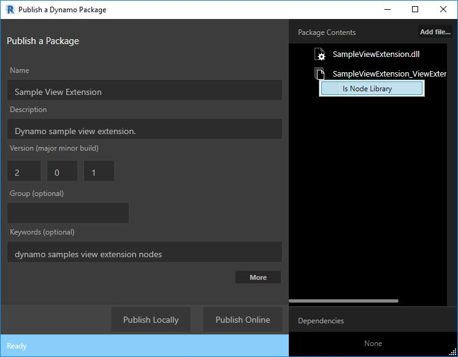
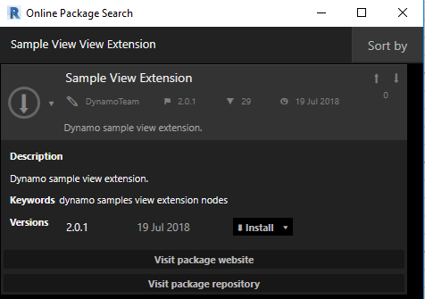

Extensions as Packages
Overview
Dynamo extensions can be deployed to the package manager just like regular Dynamo node libraries. When an installed package contains a view extension the extension is loaded at runtime when Dynamo loads. You can check the Dynamo console to verify the extension has properly loaded.
Package Structure
The structure of an extension package is the same as a normal package containing...
C:\Users\User\AppData\Roaming\Dynamo\Dynamo Core\2.1\packages\Sample View Extension
│ pkg.json
├───bin
│ SampleViewExtension.dll
├───dyf
└───extra
SampleViewExtension_ViewExtensionDefinition.xml
Assuming you have already built your extension you will (at a minimum) have a .NET assebly and a manifest file. The assembly should contain a class which implements IViewExtension or IExtension. The manifest .XML file tells Dynamo which class to instantiate in order to launch your extension. For the package manager to correctly locate the extension the manifest file should accurately correspond to the assembly location and naming.
Place any assembly files in the bin folder and the manifest file in the extra folder. Any additional assets can also be placed in this folder.
Example manifest .XML file:
<ViewExtensionDefinition>
<AssemblyPath>..\bin\MyViewExtension.dll</AssemblyPath>
<TypeName>MyViewExtension.MyViewExtension</TypeName>
</ViewExtensionDefinition>
Uploading
Once you have a folder containing the sub-directories outlined above you are ready to push (upload) to the package manager. One thing to be aware of is you currently cannot publish packages from Dynamo Sandbox. This means you need to be using Dynamo Revit. Once inside Dynamo Revit navigate to Packages => Publish New Package. This will prompt the user to login to their Autodesk account they wish to associate the package with.
At this point you should be at the normal publish package window where you will enter all the require fields regarding your package/extension. There is one very important additional step which requires you to make sure none of your assembly files are marked as a node library. This is done by right clicking on the files you have imported (the package folder created above). A context menu will appear which gives you the option to check (or un-check) this option. All extension assemblies should be un-checked.

Before publishing publicly you should always publish locally to make sure everything is functioning as expected. One this has been verified you are ready to go live by selecting publish.
Pulling
To verify your package has been succesffully uploaded you should be able to search for it given the naming and keywords specificed in the publishing step. Finally, it is important to note that same extensions will require a reboot of Dynamo before functioning. Usually these extensions require parameters specified when Dynamo boots up.
